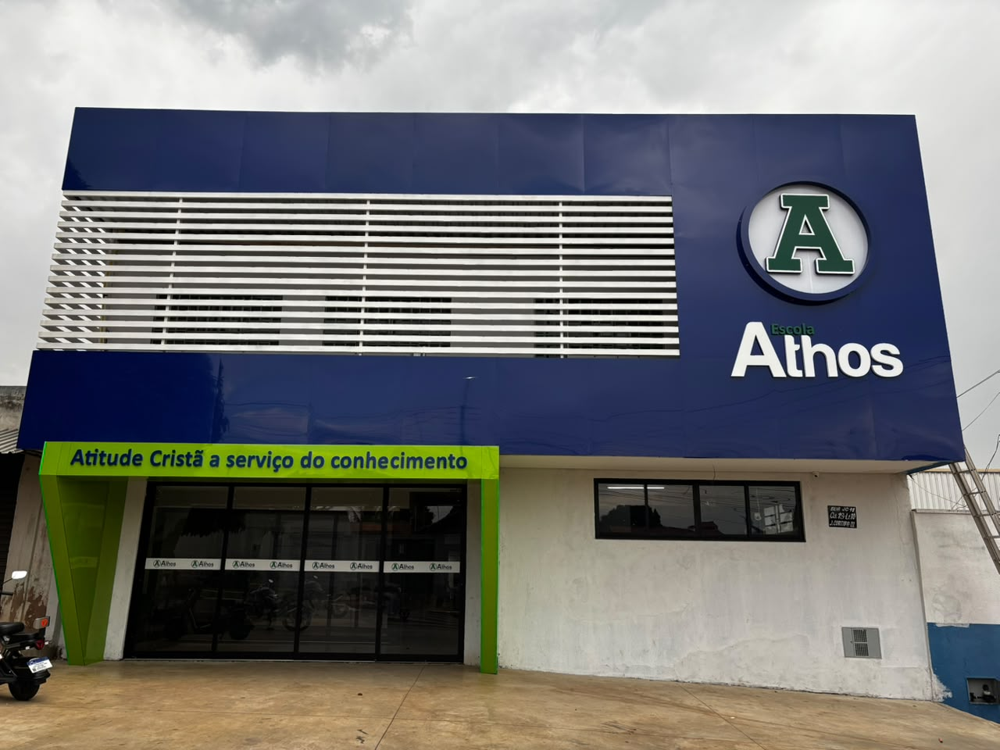

Atenção próxima
Acompanhamento real do desenvolvimento e das necessidades de cada aluno.

A Escola Athos acredita em uma educação que une conhecimento, formação cristã, acolhimento e acompanhamento próximo. Cada aluno é visto de forma individual, com atenção ao seu desenvolvimento, às relações e à construção de valores.
Da Educação Infantil ao 9º ano, a escola busca criar um ambiente seguro, organizado e humano, onde aprender também significa conviver, amadurecer e se preparar para os próximos desafios.
Acompanhamento real do desenvolvimento e das necessidades de cada aluno.
Princípios presentes nas escolhas, atitudes e relacionamentos dentro da escola.
Um espaço onde cada aluno pode aprender, conviver e se sentir parte.
Conteúdo, experiências e valores que ajudam a preparar para a vida.
A estrutura da Escola Athos faz parte da experiência de cada aluno: ambientes organizados para o aprendizado, a convivência e as atividades que fazem parte da rotina escolar.
Cada espaço é pensado para apoiar o desenvolvimento dos alunos e tornar a rotina mais acolhedora, próxima e funcional para estudantes, famílias e equipe.
Reunimos aqui documentos que orientam a proposta pedagógica, a organização escolar e os direitos das crianças e adolescentes.
Documento que apresenta a identidade pedagógica da instituição, sua filosofia, princípios, organização curricular, metodologias, avaliação e metas educacionais.
Documento que organiza o funcionamento da Escola Athos, definindo direitos, responsabilidades, procedimentos administrativos e diretrizes pedagógicas.
Referência legal para a proteção integral de crianças e adolescentes, incluindo direitos relacionados à educação, dignidade, convivência e desenvolvimento.
Consultar ECA no site oficial →Educação Infantil, Fundamental I e Fundamental II em uma jornada contínua, com cuidado, desenvolvimento e novos desafios em cada fase.
Conheça nossa estrutura, equipe e proposta pedagógica.